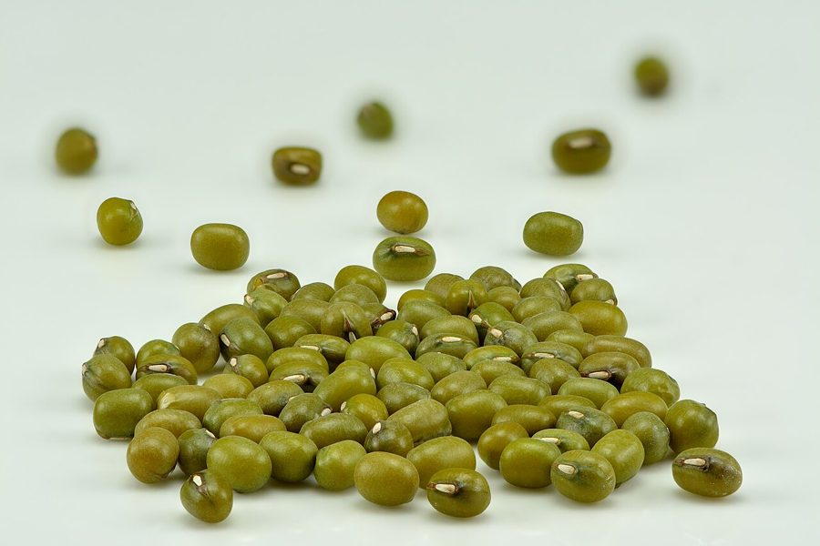

मूँगGreen Gram
Vigna radiata · Fabaceae · FLR-0174

- Scientific name
- Vigna radiata (L.) R.Wilczek
- Family
- Fabaceae
- Hindi
- मूँग
- Local names
- moong, mung, sabut moong, moong dal, green gram
- Status here
- cultivated
- IUCN
- not evaluated
- Review
- audited and independently read
When to look कब देखें
Expected mainly in May, June, July, August, September.
Uses and possibilities उपयोग और संभावनाएँ
“Traditional medicine” means a documented traditional use, not a claim that it works. Nothing on this page is medical advice.
Drawn from the documented uses in the profile below, where each is labelled traditional, current or a research lead. All uses →
मूँग / Green Gram
Vigna radiata (L.) R.Wilczek — Fabaceae
मूँग (हरा मूँग, दल मूँग) — गर्मी-बरसात की एक आम दाल की फसल, जिसे खेतों में जून-जुलाई में बोया जाता है। पौधा झाड़ी जैसा, 30-50 सेंटीमीटर ऊँचा, शाखोंवाली, पत्तियाँ तीन पत्तों की, हरी। पीले फूल छोटे-छोटे, फली छोटी, बेलनाकार, सीधी, हरी, जिसमें 7-10 हरे-पीले दाने होते हैं। दाल के रूप में खिचुड़ी, खीर, अंकुरित दाल, सब्जी सब कुछ बनती है। पशुओं के लिए भी बहुत अच्छा चारा।
Quick Identification त्वरित पहचान
| Feature | Description |
|---|---|
| Plant form | Bushy annual herb, 30–50 cm tall, densely branched |
| Leaves | Alternate, compound, trifoliate (3 leaflets), 5–10 cm, ovate, soft |
| Flowers | Small, pale yellow, in short clusters (racemes), 0.5–1 cm |
| Pods | Cylindrical, 7–10 cm, straight, green when immature, containing 7–10 seeds |
| Seeds | Small, 3–5 mm, glossy, bright green (fresh) or yellow-green (dried) |
| Stem | Herbaceous, angular, slightly hairy |
Field tip: A bushy, compact legume plant with trifoliate leaves and small pale yellow flowers. The pods are slender and straight, containing tiny, glossy, bright green seeds. Look for it in warm-season cultivated fields from June to August.
Morphology आकारिकी
Biometrics (typical measurements for cultivated moong in northern India):
| Measurement | Range |
|---|---|
| Plant height | 30–50 cm |
| Leaf length | 5–10 cm |
| Leaflet length | 3–6 cm |
| Flower diameter | 0.5–1 cm |
| Pod length | 7–10 cm |
| Pod width | 0.5–1 cm |
| Seed diameter | 3–5 mm |
Root system: Taproot with nitrogen-fixing nodules formed by symbiotic Rhizobium bacteria.
Stems: Herbaceous, angular, slightly hairy, branched from the base, forming a compact bush.
Leaves: Alternate, compound, trifoliate (three leaflets), on petioles of 5–10 cm. Leaflets are ovate, 3–6 cm long, with smooth margins and soft texture. The terminal leaflet is slightly larger.
Flowers: Small, papilionaceous, pale yellow, arranged in short, dense, axillary racemes. Self-pollination is common, though bees may visit.
Pods: Cylindrical, 7–10 cm long, straight or slightly curved, green when immature (and used as a vegetable), drying to tan or brown. Each pod contains typically 7–10 small seeds.
Seeds: Small, glossy, bright green when fresh, turning yellow-green, olive, or brown when dried, depending on the variety. The seed is smooth with a small, white hilum.
हिंदी: झाड़ी, तीन पत्तों की। पीले फूल, सीधी हरी फली। हरे दाने।
Behaviour & Ecology व्यवहार और पारिस्थितिकी
A warm-season legume of South Asian origin, now cultivated globally. Vigna radiata is a short-duration crop (80–100 days) ideal for quick cultivation. The plant requires warm temperatures (20–30°C) and moderate moisture. It is more drought-tolerant than many legumes and is often grown under rainfed conditions.
As a legume, the plant forms nitrogen-fixing associations with Rhizobium bacteria, enriching the soil for subsequent crops. The plant is relatively pest-resistant and requires minimal pesticide inputs. The short duration and nitrogen fixation make it an ideal rotation crop and intercrop in many farming systems.
हिंदी: गर्म मौसम की दाल। कम समय में तैयार (80-100 दिन)। मिट्टी में नाइट्रोजन बढ़ाती है। सूखा सहन करती है।
Life Cycle / Phenology जीवन चक्र
| Month / Season | Event |
|---|---|
| May–June | Sowing in fields; seed germination |
| June–July | Vegetative growth; plant establishment |
| July–August | Flowering; pod set |
| August–September | Pod maturation; seed filling |
| September | Harvest of dry seeds; threshing |
From sowing to maturity: 80–100 days. A productive plant yields 100–150 g of dry seeds.
हिंदी: जून में बीज, जुलाई में फूल, अगस्त-सितंबर में फसल तैयार।
Cultivation Calendar कृषि कैलेंडर
| Stage | Month(s) |
|---|---|
| Field preparation | May–June |
| Direct seeding | June |
| Germination and establishment | June–July |
| Vegetative growth and flowering | July–August |
| Pod development and maturation | August–September |
| Harvesting (dry seeds) | September–October |
Associated Species / Interactions संबंधित प्रजातियाँ
- Rotation: Often follows Paddy or Wheat; commonly followed by winter vegetables.
- Intercropping: Sometimes grown with Maize, sorghum, or other cereals.
- Related crops: Grown alongside masur (lentil), arhar (pigeon pea), and other pulses.
Pests and Diseases कीट और रोग
- Bean beetle: Occasionally feeds on leaves; not usually serious.
- Leaf-eating insects: Grasshoppers and caterpillars may cause minor damage.
- Yellow mosaic virus: Transmitted by whiteflies; causes yellowing and distortion; no cure; plant resistant varieties.
- Stem fly: Opomyza phaseoli; larvae tunnel in stems; damage usually minor.
- Generally hardy: Moong is relatively pest- and disease-resistant.
Agricultural / Human Relevance कृषि प्रासंगिकता
Food use as dals (lentils): Moong is primarily consumed as a split lentil (dal). The whole seed is cooked to produce a thick, greenish porridge (khichdi, halwa). The split lentil is also made into snacks and sweets. In Indian cuisine, moong dal khichdi is a traditional comfort food, often eaten during illness or fasting.
Sprouting: Fresh moong seeds are commonly sprouted to produce bean sprouts, rich in vitamin C and used fresh in salads or cooked dishes. Sprouting is easy, requiring only water and a few days of dark, humid conditions.
Nutritional value: Moong seeds are rich in protein (20–25% on a dry basis), carbohydrates, and minerals. The lentil is considered highly digestible and is recommended in Ayurvedic medicine for its cooling properties (shita).
Nitrogen fixation: The crop is valuable in crop rotation and intercropping systems because it adds nitrogen to the soil. A moong crop can provide 30–50 kg/ha of nitrogen to the subsequent crop.
Ease of cultivation: Moong is easy to grow and requires minimal inputs beyond land and water. It is grown by smallholder farmers using traditional methods.
Common varieties: Landrace varieties are common in eastern UP. Improved varieties include Pusa Baismati, Pusa Vishal, Shining, and others.
हिंदी: रोज़मर्रा की दाल। खिचुड़ी, हलवा, अंकुरित दाल सब कुछ बनती है। बहुत आसानी से उगती है।
Expected Locally स्थानीय रूप से अपेक्षित
Not a field record. Written from published accounts for eastern Uttar Pradesh. No confirmed local sighting yet — if you have seen it, that is what the atlas needs.
अभी तक स्थानीय पुष्टि नहीं। यह विवरण प्रकाशित स्रोतों से है, किसी अवलोकन से नहीं।
Expected as a common cultivated summer legume in fields throughout Basti district, visible from June to September. The dried seeds are sold in all local markets and grocery shops year-round as a staple pulse.
Distribution वितरण
Global range: Native to South Asia; now cultivated in tropical and subtropical regions worldwide, with major production in India and Southeast Asia.
In India: Widely cultivated in all warm-season legume-growing areas; major production in Madhya Pradesh, Rajasthan, and Maharashtra.
In Uttar Pradesh: Cultivated in all agricultural areas; an important summer crop.
In Basti district / eastern UP: Common as a summer legume crop in agricultural fields.
Research Questions शोध प्रश्न
Anyone can investigate these | कोई भी इन प्रश्नों की जाँच कर सकता है
- How long does it take moong seeds to germinate after sowing in early June vs. late June? — Sow at two different dates; count days to germination.
- What is the yield difference between moong grown alone and moong grown as an intercrop with corn? — Compare single crop vs. intercrop; measure yields.
- How many days can moong plants survive without water during flowering and pod formation? — Stop water; note when plants wilt and when they recover if watered.
- What is the germination rate of moong seeds used for sprouting? — Measure sprouting success in controlled conditions.
- Which moong variety (Pusa Baismati, Pusa Vishal, or a local landrace) has the shortest maturity in your area? / आपके इलाके में कौन सी किस्म सबसे जल्दी तैयार होती है? — Grow varieties side by side; record maturity.
Similar Species मिलती-जुलती प्रजातियाँ
| Species | How to tell apart | हिंदी |
|---|---|---|
| arhar / Pigeon Pea (Cajanus cajan) | Taller (1–2 m), with longer internodes; larger leaflets; longer pods (6–8 cm) containing 3–4 larger seeds | अरहर — बड़ा पौधा, लंबी फली |
| masur / Lentil (Lens culinaris) | Smaller (30–40 cm), more slender; leaflets narrower and more numerous; smaller pods (1.5 cm) | मसूर — छोटा, दसों पत्तियाँ |
| Garden pea (Pisum sativum) | Winter crop; larger leaflets with terminal tendril; larger pods (5–10 cm) | मटर — सर्दी की दाल, बेल, बड़ी फली |
Field rule: A bushy, compact legume with trifoliate leaves, small pale yellow flowers, and slender, straight, bright green pods containing tiny, glossy, bright green seeds; harvested as a dry seed crop in September–October is moong.
Taxonomy & Classification वर्गीकरण
Original description. Originally described by Linnaeus as Phaseolus radiatus in 1753 and later reclassified as Vigna radiata by R.Wilczek. The genus name Vigna honors Domenico Vigna, an Italian botanist. The specific name radiata refers to the radial pattern of the flower.
Subspecies. Monotypic — no subspecies are currently recognised.
Family and order placement. Fabaceae, order Fabales. The family includes all legumes.
Phylogenetic notes. Vigna radiata is closely related to V. unguiculata (black-eyed pea) and other tropical Vigna species of African and Asian origin.
IUCN status rationale. Not evaluated. Widely cultivated; not assessed for conservation status.
Photo Gallery फोटो गैलरी
Photos needed आवश्यक फोटो
- [ ] Whole plant showing bushy form and trifoliate leaves
- [ ] Close-up of pale yellow flowers
- [ ] Green pods on the plant
- [ ] Mature dried seeds
No photos yet — add field photos to media/species/moong/ and run node scripts/sync_photos.js.
References संदर्भ
- Linnaeus, C. (1753). Species Plantarum. Laurentii Salvii, Stockholm, Vol. 2, p. 1016 [as Phaseolus radiatus].
- Hooker, J.D. (1879). Flora of British India, Vol. 2. L. Reeve & Co., London.
- Indian Council of Agricultural Research (2021). Handbook of Agriculture. ICAR, New Delhi.
- Nene, Y.L. & Reddy, M.V. (1987). Chickpea diseases and their control. In The Chickpea, pp. 233–270. CAB International, Wallingford.
- Botanical Survey of India. State Flora Series: Flora of Uttar Pradesh. BSI, Kolkata.
- GBIF Occurrence Data — Vigna radiata, India (2015–2026).
Source file: species/flora/crops/moong.md